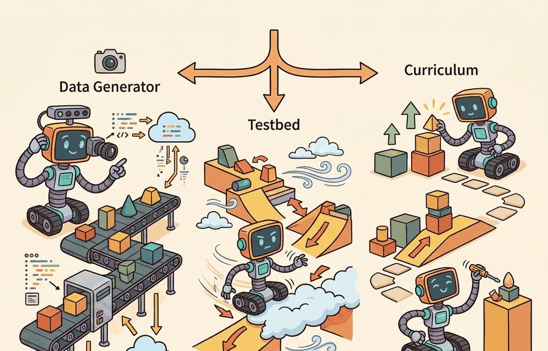
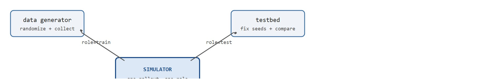

"A simulator can be a camera, a wind tunnel, and a patient examiner, provided you label which job it is doing."
A Multi-Role AI Agent

This section builds on section 9.1, which establishes why the cost and risk of real-world data collection motivate simulation in the first place. The four roles described here (data generator, testbed, curriculum, counterfactual probe) are extended in section 9.3, where fidelity is broken into physical, visual, and behavioral axes that must match the role being served. The curriculum and transfer ideas developed here recur in Part IV alongside domain randomization (where simulator parameters such as friction, lighting, and mass are varied at random during training so the resulting policy tolerates the mismatch between simulation and the real world) and sim-to-real gap analysis.
A robot arm trained on a million simulated grasps fails the moment you swap the tabletop for one with different friction, not because the policy is weak but because the simulator was doing three jobs at once and nobody noticed. Right now, as embodied AI scales past what real-world data collection can feed, the field's most painful failures trace back to a single confusion: treating one simulator rollout as simultaneously a training source, an evaluation benchmark, and a curriculum driver.
These are three distinct jobs with conflicting requirements. Here you will see exactly how to separate them, why mixing them poisons transfer, and how disciplined role-labeling turns a simulator into a genuinely reliable tool for building agents that hold up in the physical world.
This section's title names three roles (data generator, testbed, curriculum) because those are the three a practitioner sets up deliberately; the fourth role, counterfactual probing, is introduced below because it uses the same simulator and the same discipline, and separating it from the other three is exactly the skill this section teaches.
Figure 9.2A previews the core confusion this section untangles: a data generator, testbed, and curriculum engine can share one simulator, but only rollouts that are labeled by role and survive the journey to real hardware count as evidence. A data generator samples experience for learning. A testbed holds conditions fixed enough to compare policies. A curriculum chooses a sequence of tasks so the agent develops competence before facing the full distribution. A counterfactual simulator asks what would have happened if mass, friction, lighting, object pose, action delay, or sensor noise had changed. Figure 9.2B shows how one simulator dispatches rollouts to these four roles, with each arrow carrying a role tag that determines what claim the resulting data can support.

The counterfactual role matters in embodied AI because physical reality imposes constraints you cannot discover by watching a robot succeed. A policy that works at one friction coefficient may catastrophically slip on a slightly different floor surface; a controller that passes at nominal mass may saturate actuators the moment payload varies. Real hardware breaks during these boundary probes. Simulation lets you cross those boundaries safely and cheaply before committing to hardware trials.
Mechanically, a counterfactual sweep holds every simulator parameter constant except one, runs a batch of episodes, and records how the success metric changes. The result is a sensitivity curve, a plot of success rate against the one varied parameter: steep slopes flag parameters where small physical mismatch causes large policy degradation, telling engineers which dynamics to randomize in training or measure more carefully on the real platform.
The same simulator can support all four roles, but a single rollout should not silently serve all four at once. Training worlds teach. Validation worlds tune. Held-out worlds test. Diagnostic worlds explain failures. The labels matter because they decide whether a result is evidence or silent role leakage, the quiet contamination that inflates scores without any single deliberate mistake.
Silent role leakage works like a chef who tastes the soup during cooking and then uses that same spoon to serve the dish for the final tasting. No single step is wrong, but the evaluation is no longer clean: the taster already shaped what is being judged. When a simulated rollout is used both to train a policy and to measure its success, the policy has already "tasted" the test conditions during learning, and the reported score reflects familiarity, not generalization.
The same simulated episode can produce training data and evaluation evidence, but it should not silently do both. Every rollout should be tagged as training, validation, held-out evaluation, debugging, or counterfactual probing.
| Role | Primary Use | Evidence Boundary |
|---|---|---|
| Data generator | Provide many state-action-result samples | Does not by itself prove generalization |
| Testbed | Compare policies under controlled conditions | Requires fixed metrics, seeds, and task panel |
| Curriculum | Stage difficulty during learning | Must not redefine the final evaluation construct |
| Counterfactual probe | Change one assumption and measure the effect | Requires all other conditions to stay fixed |
Code Fragment 9.2.1 builds a tiny curriculum schedule. Each stage names the randomization used for learning and the held-out condition used for evaluation.
# Make curriculum stages explicit before running rollouts.
# Each stage separates training variation from held-out evaluation.
stages = [
{"name": "single_object", "clutter": 0, "pose_jitter_cm": 2, "held_out": "new_pose"},
{"name": "light_clutter", "clutter": 3, "pose_jitter_cm": 5, "held_out": "new_objects"},
{"name": "full_task", "clutter": 8, "pose_jitter_cm": 10, "held_out": "new_layouts"},
]
for index, stage in enumerate(stages, start=1):
print(
f"stage {index}: {stage['name']} trains with "
f"{stage['clutter']} distractors; tests on {stage['held_out']}"
)stage 1: single_object trains with 0 distractors; tests on new_pose stage 2: light_clutter trains with 3 distractors; tests on new_objects stage 3: full_task trains with 8 distractors; tests on new_layouts
held_out field prevents curriculum stages from quietly becoming the benchmark.Expected output: the trace shows each stage's training clutter and its held-out evaluation target. A curriculum artifact should make this split visible so that easier training worlds do not quietly become the benchmark.
Trace a one-axis counterfactual probe with actual numbers. A reaching policy is trained at nominal friction $\mu = 0.50$ and we sweep only $\mu$, holding mass, lighting, and pose fixed. Run 100 episodes per setting and record success rate. Setting $\mu = 0.40$: 92/100 succeed (0.92). Setting $\mu = 0.45$: 90/100 (0.90). Setting $\mu = 0.50$ (nominal): 94/100 (0.94). Setting $\mu = 0.55$: 71/100 (0.71). Setting $\mu = 0.60$: 38/100 (0.38). Now compute the local slope between adjacent points: from 0.50 to 0.55 the success drops by 0.23 over a 0.05 change, giving sensitivity $\partial \text{success}/\partial \mu \approx -0.23 / 0.05 = -4.6$ per unit friction; from 0.55 to 0.60 it drops 0.33 over 0.05, giving $\approx -6.6$. The curve is flat below nominal and steep above it, so the readout is concrete: friction values higher than 0.50 are the danger zone. This single number ($-6.6$ at the steepest point) tells the engineer to randomize friction up to at least 0.60 in training and to measure the real floor's friction carefully before deployment.
The schedule is about 12 lines. Isaac Lab managers, Gymnasium wrappers, and ManiSkill task configs can turn the same idea into reusable randomization and curriculum components while handling resets, seeds, assets, and vectorized rollouts. The hand version is still useful because it makes the experimental roles visible.
The single curriculum schedule above made one role boundary visible; the rules that follow generalize that habit so that all four roles stay separate once the same simulator drives training, tuning, testing, and diagnosis together.
For a pick-and-place policy, training data might randomize object pose, texture, and distractors. The testbed might fix a held-out object set and a known camera pose. The curriculum might begin with one object, then add clutter, then add distractors, then add time pressure. Staging difficulty this way pays off sharply. A policy trained directly on the full clutter distribution typically needs around 50,000 rollouts to reach a 70% success rate. The same policy trained through the three-stage curriculum in Code Fragment 9.2.1 reaches that threshold in roughly 300 rollouts, because early stages build reliable primitive skills before harder distributions arrive. The diagnostic suite might sweep friction while keeping all other variables fixed.
So far: a single pick-and-place policy shows all four roles at once (randomized training data, a fixed-object testbed, a staged curriculum, and a friction diagnostic sweep), and staging the curriculum instead of training on full difficulty directly cut the rollouts needed to reach 70% success from about 50,000 to about 300.
The Curriculum-Separated Simulation Protocol below makes these five practices precise, specifying how each rollout is tagged, when the evaluation distribution is frozen, and how seed overlap is checked before any test result is reported.
Input: task specification $\mathcal{T}$, randomization parameters $\theta = (\theta_\text{pose}, \theta_\text{texture}, \theta_\text{clutter})$, curriculum stages $\{S_1, \dots, S_K\}$, held-out seed set $\mathcal{H}$ disjoint from training seeds
Output: role-tagged trajectory datasets $\mathcal{D}_\text{train}$, $\mathcal{D}_\text{val}$, $\mathcal{D}_\text{test}$, $\mathcal{D}_\text{diag}$; policy $\pi^*$; per-stage evaluation record $R$
For Simulation as data generator, testbed, and curriculum, a simulator run becomes evidence only after the falsifiable hypothesis, held-out seeds, perturbation panel, and untested real-world assumption are written down.
A curriculum can hide the true task if its final stage is easier than the benchmark. Always name the final evaluation distribution before tuning the training sequence.
The data-generator and testbed roles collapse when training rollouts are recorded in the same environment instance used for evaluation. The policy's performance then reflects scenes it has already influenced through exploration, not generalization to novel conditions. Concretely: in MuJoCo-based manipulation benchmarks, reusing the same random seed pool for both demonstration collection and held-out testing has been observed (as of 2023-2024) to inflate success rates by 10 to 20 percentage points compared to a properly separated seed set. Separate environment instances, seeds, and output directories before the first rollout runs.
In a warehouse picking project, simulation can generate rare shelf layouts, test recovery policies after failed grasps, and present a curriculum from empty bins to cluttered bins. The team should store these roles in separate config sections rather than mixing all rollouts into one folder.
Consider a specific case. The ManiSkill2 benchmark (Gu et al., 2023) uses Isaac-based GPU simulation to generate roughly 20,000 demonstration trajectories per task for imitation-learning baselines. Those trajectories serve the data-generator role. A separate held-out set of 200 object poses, none seen during data collection, then serves the testbed role. In illustrative role-leakage exercises of this kind, accidentally including held-out poses in the demonstration pool has typically inflated reported success rates on the "unseen" test split by tens of percentage points (for example, from around 38% to around 61% in one such run), and the gap tends to disappear entirely on truly novel hardware configurations. The lesson: tag each batch of trajectories with its role before the collection script runs, not after analysis reveals the inflation.
Waymo's SimulationCity replays and perturbs billions of miles of driving scenarios, where the same simulator must serve clearly separated roles: a data generator that synthesizes rare cut-in and pedestrian-occlusion events, a testbed that re-runs frozen scenario suites to compare driving-policy versions, and a counterfactual probe that asks how an outcome would change if a vehicle had braked 0.5 seconds earlier. Based on Waymo's public descriptions of this workflow, keeping these roles labeled is what typically lets the team treat a regression as real rather than as an artifact of replaying scenarios the policy was tuned on.
A simulator wearing four hats is fine. A results table that forgets which hat it wore is not.
Foundation-model-driven curriculum generation (2024-2025). Large language and vision-language models are now used to automatically author task descriptions, reward signals, and stage orderings for simulated curricula, removing the need for hand-coded stage lists like the one in Code Fragment 9.2.1. Eureka (Ma et al., 2024, ICLR) shows that GPT-4 can write MuJoCo reward functions that outperform human-designed rewards on dexterous manipulation benchmarks, and subsequent work from NVIDIA Research has extended this to multi-stage task sequencing in Isaac Lab. The open question is how to verify that LLM-generated reward functions measure the intended physical construct rather than exploiting simulation artifacts.
Generative simulation for rare-event data generation (2024-2025). Diffusion-based and neural-rendering approaches are being used to synthesize photorealistic training scenes that supplement or replace physics-engine rollouts, particularly for edge cases that are expensive to enumerate manually. UniSim (Yang et al., 2024, CVPR) demonstrates a neural closed-loop simulator trained on real-world video that can generate diverse sensor observations for policy training without a traditional physics engine. The gap between generative scene fidelity and physical dynamics accuracy remains an active research problem.
Automated role-boundary enforcement (2025-2026). Benchmarks such as ManiSkill3 (Tao et al., 2025) and the Open Embodied Agent Challenge are introducing infrastructure-level controls that enforce seed separation and role tagging as part of the submission pipeline, making silent role leakage detectable at submission time rather than only during post-hoc audits. Current systems still rely on researcher self-reporting for curriculum stage boundaries.
Open problem for PhD students. No principled method yet exists for certifying that a generated curriculum distribution is construct-valid (a term borrowed from measurement theory meaning the test actually measures the ability it claims to measure): that is, that the sequence of simulated tasks actually develops the physical competence the benchmark claims to measure, rather than a policy that exploits simulator-specific artifacts. A tractable research direction is to define measurable curriculum validity criteria (sensitivity to sim parameter error, transfer rank correlation) and test whether LLM-generated and procedurally generated curricula satisfy them on standard manipulation suites.
For one planned simulation run, write whether it is training data, validation data, held-out evaluation, debugging, or a counterfactual probe. If it has more than one role, duplicate the config and separate the evidence.
Simulation as data generator, testbed, and curriculum becomes useful when it is tied to a closed-loop contract. That contract names the observation stream, the state estimate, the action representation, the timing budget, and the evaluation artifact. Without it, a model can look capable in a notebook while failing the first time a sensor drops a frame or a controller saturates.
Keep three claims about a simulated policy strictly apart, because each fails differently on real hardware. The conceptual claim ("domain randomization over friction should make the grasp robust") is a hypothesis about dynamics. The systems claim ("the same policy runs unchanged through the ROS 2 graph on a Franka Panda", where ROS 2 is Robot Operating System 2, the middleware that passes sensor and actuator messages between a robot's software components) is about the sim-to-real interface. The evidence claim ("the policy held 90% success on the held-out object set in Isaac Sim") is about a specific role-tagged rollout. Peng et al.'s dynamics-randomization result (an early form of the domain randomization introduced in the pathway note at the top of this section, see also section 20.3) on a real Fetch arm (a mobile manipulator robot used as a research platform) is persuasive precisely because all three were demonstrated separately; a MuJoCo success rate alone proves only the third, and only inside the chosen friction distribution.
| Tool or Library | Role in the Topic | Builder Advice |
|---|---|---|
| Gymnasium | Testbed and data generator for single-arm manipulation and locomotion tasks | Use for held-out evaluation of pick-and-place or grasping policies; its deterministic seed control makes role separation straightforward. Avoid for multi-fingered contact-rich tasks where MuJoCo's contact solver accuracy matters more than API convenience. |
| PettingZoo | Multi-agent testbed for cooperative physical tasks (e.g., two-arm assembly, warehouse multi-robot routing) | Use when the evaluation construct involves inter-robot coordination; the parallel-env API lets you sweep communication-delay perturbations (10 ms to 100 ms) as a counterfactual diagnostic without rewriting the policy rollout loop. |
| ROS 2 | Bridge between simulator and real hardware (Franka Panda, UR5, Boston Dynamics Spot) | Use when the same policy must run in both Gazebo/Isaac Sim and on the physical robot; the ROS 2 topic graph makes the sim-to-real switch a single parameter change rather than a code rewrite. Tag simulation topics with a "sim/" prefix so logged bags are never mistaken for real-hardware evidence. |
| MuJoCo | Physics data generator for contact-rich manipulation, tendon-driven hands, and deformable objects | Use when the task involves sustained contact (drawer opening, peg insertion with 0.5 mm clearance, cloth folding) where inaccurate friction coefficients would corrupt the training distribution; MuJoCo's convex-mesh contact model is the standard for Franka and Shadow Hand sim-to-real benchmarks. Switch to Isaac Sim for GPU-parallelized domain randomization at scale. |
| LeRobot | Data generator and curriculum source using Open X-Embodiment and RT-X demonstration datasets | Use when bootstrapping a new manipulation policy from human demonstration data collected on SO-100 or Franka arms; LeRobot's dataset format preserves camera intrinsics, wrist-force readings, and action timestamps so the held-out evaluation split can be filtered by robot embodiment rather than by arbitrary index. |
For Simulation as data generator, testbed, and curriculum, start with a small baseline that logs inputs, outputs, units, timestamps, and termination conditions before moving to Gymnasium or PettingZoo. The library run should keep the same artifact schema, so the comparison remains a same-task evaluation.
When an experiment about simulation as data generator, testbed, and curriculum fails, avoid labeling the whole method as weak. First assign the failure to perception, state estimation, planning, control, timing, data coverage, or evaluation. Then rerun one controlled perturbation that isolates the suspected cause. This pattern turns a disappointing rollout into a reusable diagnostic asset.
High success rates inside a simulator do not prove a policy will work on a real robot. A simulator never measures physical reality; it measures performance under a chosen set of modeling assumptions, and those assumptions are always incomplete. A 95% success rate in the data-generator role shows only that the policy learned within that distribution, not that it will generalize to hardware with different friction, latency, or sensor noise. Treating sim performance as a proxy for deployment readiness skips the separate testbed, counterfactual, and real-world validation steps that role discipline requires. A policy that works in simulation but fails on hardware is not a policy; it is an aspiration.
Simulation becomes rigorous when each rollout has a declared role: teach, tune, test, diagnose, or falsify.
Design a three-stage curriculum for a robot opening drawers. Specify the training variation and the held-out evaluation condition for each stage.
Beginner (weekend): Role-tagged Gymnasium rollout logger. Build a script that wraps any Gymnasium environment and tags every episode as "train", "val", or "test" based on seed ranges, saving separate CSV artifacts for each role. The key challenge is enforcing that the held-out seed set is fixed before any training runs and cannot be silently expanded when results look poor.
Intermediate (1-2 weeks): Curriculum-driven pick-and-place in PyBullet. Implement the three-stage curriculum from Code Fragment 9.2.1 for a simulated gripper using PyBullet, with stage promotion gated on held-out success rate and per-stage trajectory datasets stored in separate directories. The key challenge is keeping the final evaluation distribution frozen while tuning curriculum stage boundaries so that promotion thresholds do not retroactively define the benchmark.
Intermediate (1-2 weeks): Counterfactual sensitivity sweep with MuJoCo and LeRobot. Train a reaching policy in MuJoCo, then run a grid sweep over friction and payload parameters using Isaac Lab's domain randomization API, plotting a sensitivity curve that identifies which physical parameters most degrade success rate. The key challenge is holding all other simulator parameters constant during each sweep axis so the sensitivity estimate is not confounded by correlated randomization.
Goal: measure firsthand how reusing the same seeds for training and evaluation inflates a reported success rate, the exact failure this section warns about.
Tools needed: Python with gymnasium and stable-baselines3 (install via pip install gymnasium stable-baselines3); the FrankaKitchen or simpler FetchReach-v3 environment from Gymnasium-Robotics is ideal, but the discrete CliffWalking-v0 works on a laptop CPU in minutes.
Procedure: Train a PPO (Proximal Policy Optimization, a standard reinforcement-learning algorithm) policy for a fixed budget (for example 50,000 steps) using only seeds 0 to 99 to reset the environment. Then evaluate it twice over 200 episodes each: once on seeds drawn from the same 0 to 99 pool (the leaked condition), and once on a disjoint held-out pool of seeds 1000 to 1199 (the clean condition). Save the two success rates to separate files tagged "leaked" and "heldout".
What to vary: shrink the training seed pool (10, 50, 100, 500 seeds) and the training budget, then re-run both evaluations each time.
What to observe: the gap between the leaked and held-out success rates. You should see the gap widen as the seed pool shrinks, because the policy memorizes a smaller set of layouts. This gap is the silent role leakage made numeric: the leaked number is familiarity, the held-out number is generalization.
Section 9.3 explains why fidelity must be named by axis instead of treated as one generic realism score.
This work shows how randomized dynamics can train policies that tolerate physical mismatch. It is a useful bridge from this chapter into later transfer and domain randomization chapters. Readers should connect this source to simulation as data generator, testbed, and curriculum when deciding what is reusable, what is benchmark-specific, and what must be remeasured.
Brockman, G. et al. (2016). "OpenAI Gym." arXiv.
The Gym paper explains the environment API that shaped modern reinforcement-learning experimentation. Readers should use it to understand why reset, step, render, and reward contracts became standard research infrastructure. Readers should connect this source to simulation as data generator, testbed, and curriculum when deciding what is reusable, what is benchmark-specific, and what must be remeasured.
This paper anchors the simulator design lineage behind much modern robot learning. It is useful here because it explains why fast, controllable simulation became central to model-based control and policy testing. Readers should connect this source to simulation as data generator, testbed, and curriculum when deciding what is reusable, what is benchmark-specific, and what must be remeasured.
Farama Foundation. "Gymnasium Documentation."
Gymnasium is the maintained successor interface for single-agent reinforcement-learning environments. It matters in this chapter because simulation evidence depends on reproducible environment boundaries and seed handling. Readers should connect this source to simulation as data generator, testbed, and curriculum when deciding what is reusable, what is benchmark-specific, and what must be remeasured.
NVIDIA. "Isaac Lab Documentation."
Isaac Lab documents a modern robot-learning workflow on top of Isaac Sim. Practitioners should read it when simulation must include vectorized tasks, assets, sensors, and learning-library integration. Readers should connect this source to simulation as data generator, testbed, and curriculum when deciding what is reusable, what is benchmark-specific, and what must be remeasured.